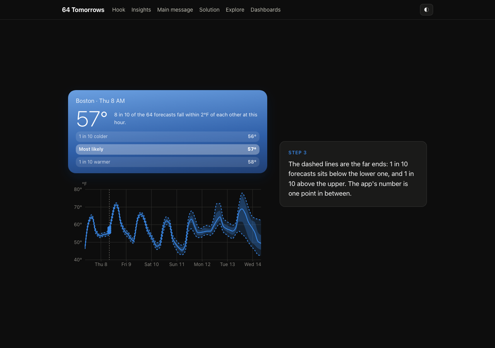
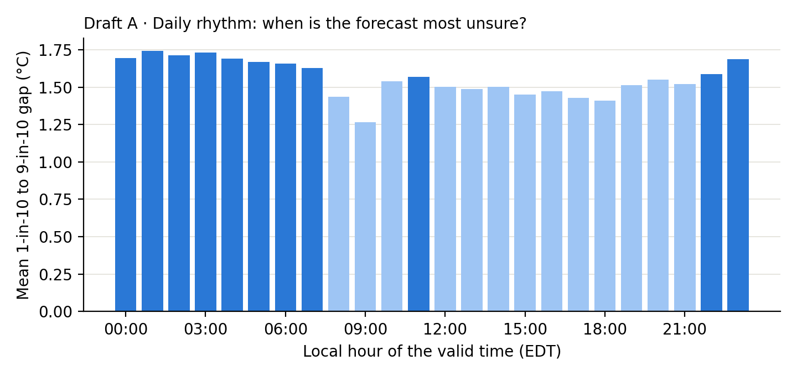
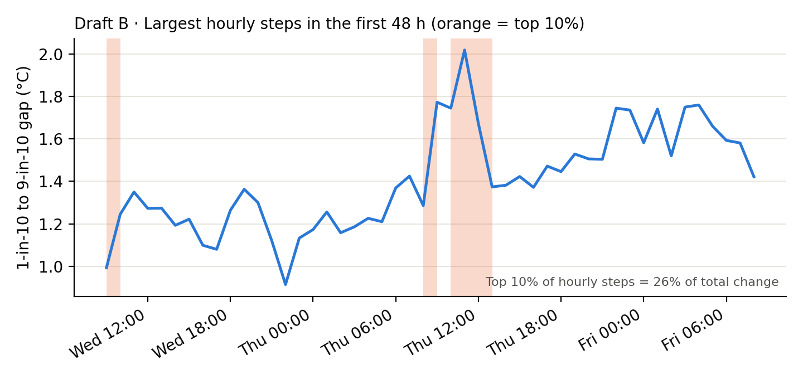
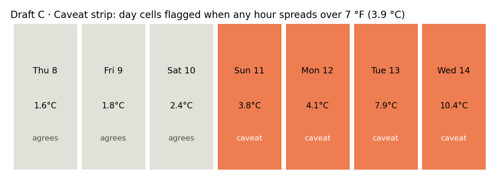

CS1710 · 64 Tomorrows · WeatherNext 3 forecast, New England
Students who worked on this prototype: Henry Mattoni, Ryan Eto, Luke Tan.
Confirm before submitting that each of the three actively worked on this submission. The contribution split is not recorded in the repository.
The Milestone 7 storyboard set the story: a hook (the single number a weather app shows), rising insights (how uncertainty grows and varies), a main message (the app picks one future and hides how unsure it is), and a solution (learn when to trust a forecast). The site is now a scrollytelling page built on that arc. Each act is a sticky chart beside a series of text steps. As the reader scrolls, each step changes what the chart shows.
scrollyHook): one app-style number, then the fan of 64 forecasts it came from,
then the far-end answers, then the same hour a week out.scrollyGrowth): two days out, a week out, four places, the Tue 13
jump, then wind.scrollyCaveat): one bar per day, with the 7 °F trust limit; the agreeing
days, then the caveat days.scrollyHorizon): each town's trust horizon, shortest, longest, and the
coast-vs-inland question.The pipeline is finished and produces the data the site uses. Source: Google WeatherNext 3 ensemble statistics
(mean and 10th to 90th percentiles of the 64 members) from gs://weathernext3_statistics_spatial.
pipeline/fetch_wn3_stats.py streams the latest 6-hourly run and crops it to New England.pipeline/fetch_time_machine.py pulls the same valid window from 10 earlier runs (for the time machine).pipeline/fetch_storm.py pulls wide-domain sea-level pressure (for the storm cone).pipeline/build_web_data.py and pipeline/build_extras.py write the compact site data:
44 field files stored as int16 binaries, per-town time series for 12 places, and the geography files.Current data: run initialized 2026-10-07 12Z, 88 lead times from +1 h to +168 h (hourly to 48 h, then 3-hourly), 12 towns. Re-running the fetch streams about 63 GB, so it is documented but not re-run for this submission.
This is the hook of the story. The left card shows what a weather app shows: one temperature. The right chart is the same hour across all 64 forecasts, drawn as a fan of percentile bands. The card's number is a point on that fan. Its three answers, 1-in-10 colder, most likely, and 1-in-10 warmer, are plotted as dots on the scrub line.
manifest.json for the valid times, and points.json for the selected
town's 10th, 25th, 50th, 75th and 90th percentile temperatures.
Figure 1. Act 1 at step 3 (far ends shown), Boston, dark theme, desktop width. Captured from the local build.
Known limit: the statistics give percentiles, not each of the 64 forecasts. The dashed edges are the 10th and 90th percentiles, so they stand in for the "far-end members" in the storyboard, not for real members. The card is also not a copy of any particular app's design.
The growth chart is now a scroll sequence (Act 2). It plots the gap between the 1-in-10 high and low: two days, then a week, then four places, then the Tue 13 jump highlighted, then wind. Each step changes the lines shown. The numbers in the text are filled in from the data at load time. The jump is described in Section 6.
The page follows the storyboard's order: a hook, then four scroll acts, then a short set of links to the dashboards and a section of classic views. Each act has a sticky chart on the left (desktop) and step cards on the right. On phones the chart stays pinned at the top while the step cards scroll beneath it. A sticky header links to each act. Charts mount when they come into view and redraw at each step. Desktop and phone layouts were checked with screenshots from a local build at each step, and the console showed no errors.
Each storyboard claim was checked against the statistics before it went into the site copy.
| Storyboard claim | What the data shows (this run) | Status |
|---|---|---|
| The first couple of days are very reliable. | Boston's 10–90 gap is 1.3 °C at +24 h and 1.4 °C at +48 h, against 3.1 °C at +96 h. The 12-town mean is 1.3 °C at +24 h. | Supported |
| Uncertainty is largest further away in time. | Boston: 1.3 °C (+24 h), 2.1 °C (+72 h), 3.1 °C (+96 h), 11.2 °C (+168 h). | Supported |
| When uncertainty grows it jumps instead of sloping up. | Boston's gap moves from 3.6 °C (+144 h) to 13.0 °C (+150 h), with the median moving from 14.5 °C to 20.5 °C. That is a clear jump. In the first 48 h, however, the top 10% of hourly steps account for only 26% of the total change, so the jumping is concentrated in the late forecast here, not the early one. | Partly supported |
| Uncertainty follows a daily pattern. | Averaged over the 12 towns for the first 48 h, the gap is lowest at 09:00 local (1.27 °C) and highest at 01:00 (1.74 °C). The swing is about half a degree. | Supported, small |
| Coast is less uncertain than inland. | Coastal towns (Boston, Cape Cod, Providence, Portland ME) against inland (Worcester, Springfield, Pittsfield, Hartford, Concord NH, Mt Washington, Burlington VT). First 48 h: 1.47 °C against 1.60 °C. +48 to +120 h: 2.65 °C against 2.94 °C. The difference is small and comes from one run. | Weakly supported; worded as "slightly narrower" |
| Trust horizon depends on the place. | Using the 7 °F trust limit: Mt Washington loses the forecast first (3.8 days), Cape Cod keeps it longest (5.3 days), and most other towns are at about 4 days. | Supported; the coast-vs-inland split is not clean |
| Different variables have different patterns. | At +24 h the wind gap ranges from 1.2 to 2.3 across towns. The rain-rate gap ranges from 0 to 1.8 mm/h, so rain is much more uncertain in some places. | Supported |
| Some areas are less certain than others. | Mt Washington's gap is 1.6 °C at +24 h and 7.9 °C at +144 h. Cape Cod's is 0.8 °C at +24 h. | Supported |
The earlier "top 10% of steps carry 42–56% of the change" figure was an error. It mixed hourly and 3-hourly steps after +48 h. The corrected 26% figure is used here.
Three visualization designs. Draft C is now built into the site (Act 3); Drafts A and B are not yet. Each draft uses real numbers from this run, drawn with
docs/prototype/make_draft_figures.py.

Figure 2. Mean gap by local hour, first 48 h, 12 towns. Bars at or above the average are darker.
Question: at what time of day is the forecast most or least uncertain? Design: a 24-hour dial (or bar strip) that sits next to the rising-insights chart. Hovering an hour shows the gap at that hour for each day. Why it matters: it answers the storyboard's "daily pattern" claim directly and tells a user when to check a forecast. Open question: the swing is only about half a degree, so the dial might need to stay subtle to avoid overstating it.

Figure 3. Hourly gap for Boston over the first 48 h. Orange spans are the 10% largest hourly steps.
Question: is uncertainty changing smoothly or in jumps? Design: the growth line, with its largest steps shaded and the share of change they account for in the corner. A timeline of run-to-run changes from the time machine would sit below it. Finding that shapes this design: in the early forecast the jumps are small, so the late-week jump (Section 6) is what the design has to show.

Figure 4. One cell per valid day. A cell is flagged when any hour's 10–90 gap is above 7 °F (3.9 °C), the trust limit the trust-horizon map uses.
Question: which days need a caveat? Design: a seven-cell strip above the planner. Flagged days show a "caveat" label and the forecast gap. The storyboard's "keyword usually, show caveats on extreme days" becomes a visible rule instead of a footnote. Status: the caveat chart is now built as the Act 3 scroll sequence, so this draft is implemented. Finding: in this run, Thu 8 to Sat 10 have no hour above 7 °F. From Sun 11, 41% or more of hours are above it, rising to 81% on Tue 13 and 100% of the hours up to 8 AM on Wed 14.